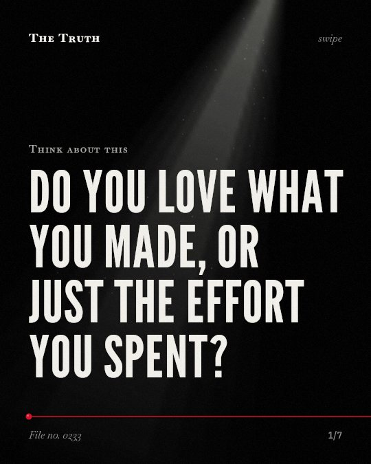

Think about this
Do you love what you made, or just the effort you spent?

Friction transforms algorithms into personal artifacts.
Deliberately incorporating productive friction into ai-supported learning activities can elicit an ikea effect. This transforms algorithmically generated material into personally appropriated creative artifacts.
Supported. At least one solid peer-reviewed study. The evidence is mixed.
What the research found
Granting a property title is associated with a 17% increase in total household work hours and a 47% decrease in the probability of working inside the home for the average squatter family.
“For the average squatter family, granting of a property title is associated with a 17% increase in total household work hours and a 47% decrease in the probability of working inside the home.”
Study, 2007. Field, The Quarterly Journal of Economics.
The use of labor cost reductions to manage required regulatory capital is more pronounced in private banks.
“However, I also find that the use of labor cost reductions to manage required regulatory capital is more pronounced in private banks.”
Study, 2016. Hall, The Accounting Review.
The study highlights the importance of deliberately incorporating productive friction into AI-supported learning activities to elicit an 'IKEA effect,' thereby transforming algorithmically generated material into personally appropriated creative artifacts.
“The study highlights the importance of deliberately incorporating productive friction into AI-supported learning activities to elicit an "IKEA effect," thereby transforming algorithmically generated material into personally appropriated creative artifacts.”
Observational study, 2026. Tong, Frontiers in psychology.
Urban property titling is associated with a 28% reduction in the probability of child labor for the majority of households with children.
“Furthermore, for the majority of households with children, urban property titling is associated with a 28% reduction in the probability of child labor.”
Study, 2007. Field, The Quarterly Journal of Economics.
Public bank managers prefer greater flexibility to remove labor resources when desired.
“I document that public banks have more elastic labor cost structures than private banks, which suggests that public bank managers prefer greater flexibility to remove labor resources when desired.”
Study, 2016. Hall, The Accounting Review.
Perceived GenAI support is positively and significantly associated with psychological ownership.
“The results showed that perceived GenAI support was positively and significantly associated with psychological ownership, and that this relationship operated through a sequential pathway involving creative self-efficacy, flow state, and learner engagement.”
Observational study, 2026. Tong, Frontiers in psychology.
Ownership is tied to effort.
Research shows that perceived genai support is significantly associated with psychological ownership. When you add friction to the process, you create a sense of personal connection to the result.
Your pride is a manufactured feeling.
That may be why you feel a deep sense of achievement when you struggle with a tool. The friction itself might be the source of your value, not the quality of the output.
This part is our reading of the evidence, not a finding.
The screen glows in the dark.
You sit at your desk late at night, tweaking a prompt again and again. You feel like you built something unique, even though the machine did the heavy lifting.
The honest summary
The evidence confirms that effort and friction are linked to psychological ownership in creative tasks, but it does not address whether this leads to overvaluing poorly made physical goods.
The primary source mentioning the 'IKEA effect' is an observational study and does not measure objective product quality.
Is the work worth the result?
Sources
- Curtis M. Hall (2016). Does Ownership Structure Affect Labor Decisions?. The Accounting Review. Study, cited 103 times.
- Erica Field (2007). Entitled to Work: Urban Property Rights and Labor Supply in Peru. The Quarterly Journal of Economics. Study, cited 624 times.
- Tong T (2026). Beyond prompt engineering: the associations among creative self-efficacy, flow state, learner engagement, and psychological ownership in GenAI-assisted composition. Frontiers in psychology. Observational study.
Also read for this file, not quoted
- Ognedal (2012). Unstable ownership.
- Azar et al. (2022). Common Ownership in Labor Markets.
- Schirrmacher et al. (2026). Digital tokens reshape ownership, control, and labor: organizing logics in DAOs.
This file was researched and drafted by software, then checked by rules a model cannot talk its way around: each quote above was matched word for word against the paper, and every number had to appear in it. How files are made.